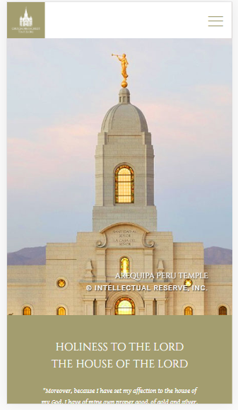

White Space
Jessica Day George Homepage
jessicadaygeorge.com/There is good white space on this website because each book has its own space and there is room for the eye to rest and appreciate what is on this webpage.
Rule of Thirds
Temples of The Church of Jesus Christ Website
churchofjesuschristtemples.org/ This website shows the rule of thirds well becuase major parts of the Temples are either on the lines for the rule of thirds, or they are on the crosshairs of those lines.
Visual Hierarchy
The Church of Jesus Christ of Latter-day Saints Homepage
churchofjesuschrist.orgThere is good visual hierarchy with this website because the things that are the most important or time sensitive are the most prominent with the biggest type and images. The articles that are not as new or interesting are smaller and lower down the page to show they are not as important at the time.